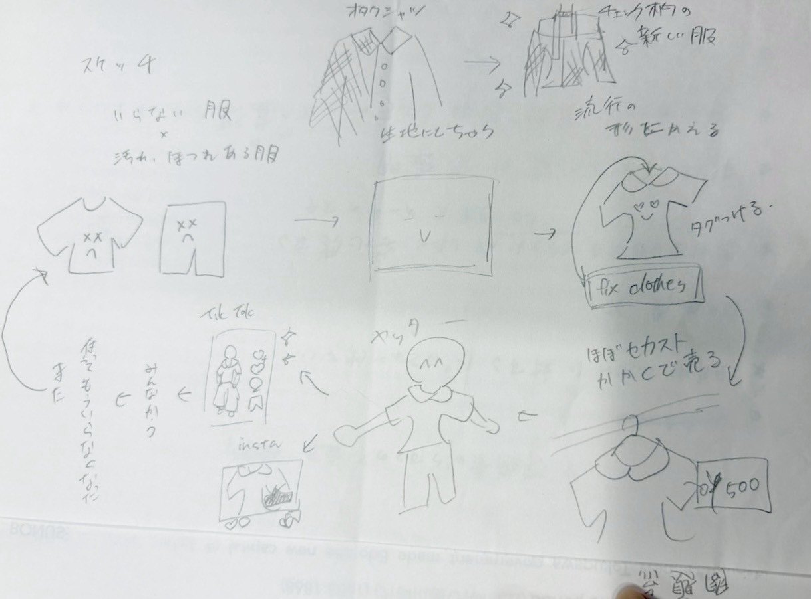
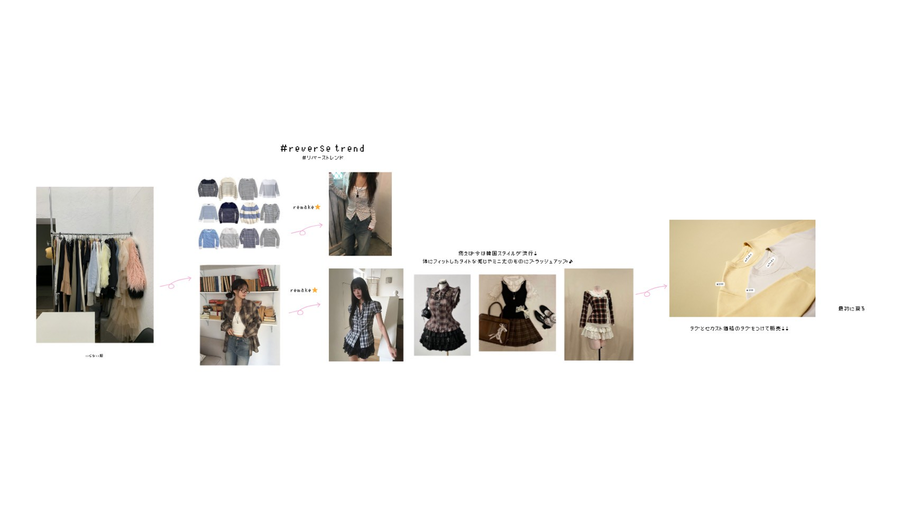
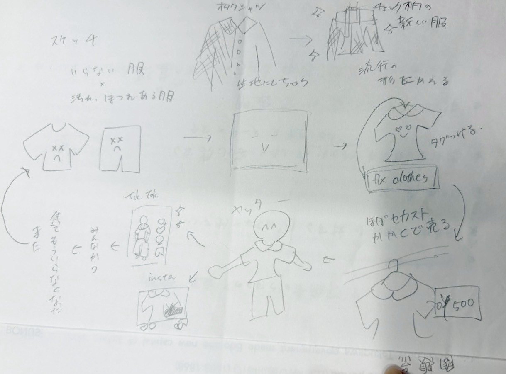
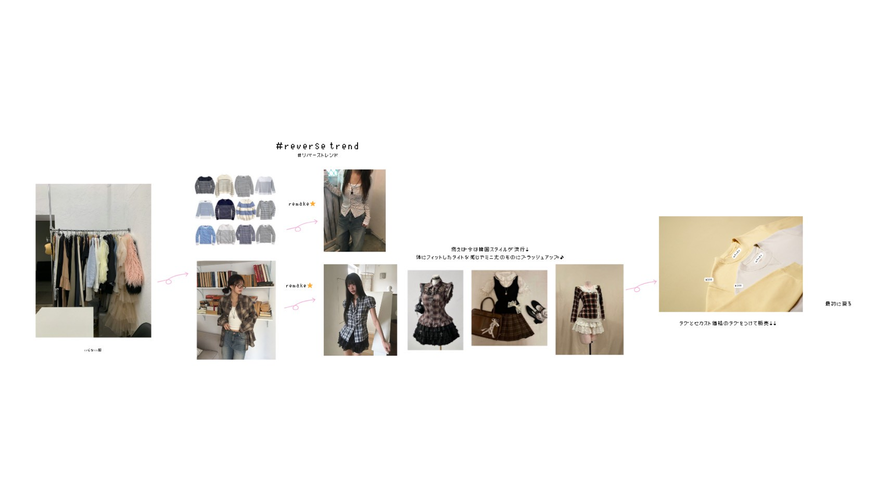
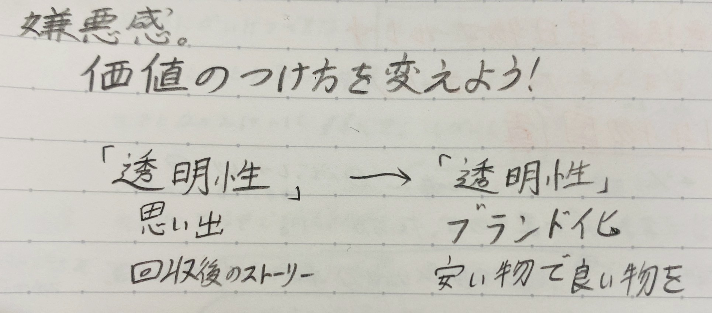

２０２５年１０月１７日
【やったこと】
- グループ内で解釈を一致させ、方向性まとめる
- 全体で課題を明確化・方向性の共有
グループ内で解釈を一致させ、方向性まとめる
前回の解釈では、トレンドを繰り返すことで、新しい服の購入ではなく、今ある服でコーディネートを組むことを促すようにすることだった。大体はあっていたが、トレンドを繰り返すというより、今のトレンドにあった服を今持っている服で作り出すことが正解。
回収→トレンド風にリメイク→販売→回収のサイクルを形成。
SNS→Instagram・TikTokを使用。
方向性についてのまとめ
 



全体で課題を明確化・方向性の共有
【プロジェクトの大きな課題】- 思い出を紡ぐストーリー性は、消費者に響かない。
- 服回収後、海外で服のゴミの山になっている現状がある。
そもそも、循環の意識が無い。
※高尚さ：知性や品格が高いこと。精神的・道徳的に優れていること。志が高く、立派な状態を指す。
【グループの方向性(課題に対し、どう捉え、取り組んでいくか)】
価値のつけ方を変える！
「透明性」という点は変えずに、思い出や回収後のストーリーではなく、ブランド化で安心感を生み出し、安いもので良い物の循環に透明性を置く。
